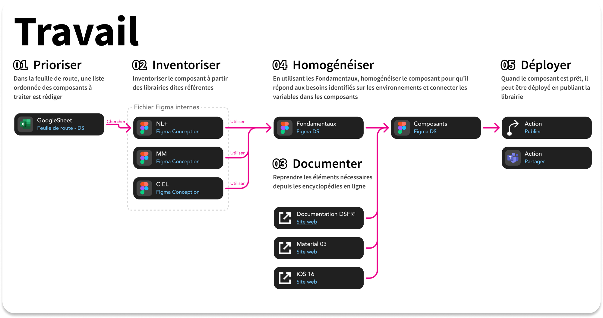

Process · Design system01
Un process de travail en 5 étapes
Prioriser les composants selon la feuille de route des chefs de projet, les inventorier, se renseigner dans la documentation en ligne, les homogénéiser selon les besoins de chaque produit, puis déployer le composant.
